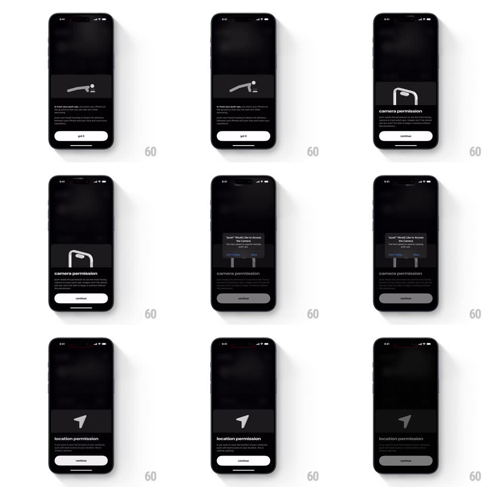

Media
Frame-by-frame

Rebuild this interaction 1:1: Push's permission sheet flow - springy dark bottom sheets walk through the ask (push-up tracking intro, camera permission, then the real system dialog, then location), each sheet sliding up over the last with oversized lowercase type.

Rebuild this interaction 1:1: Push's permission sheet flow - springy dark bottom sheets walk through the ask (push-up tracking intro, camera permission, then the real system dialog, then location), each sheet sliding up over the last with oversized lowercase type.
## Integration
Integration: stack-agnostic spec - springs given as stiffness/damping, timed motions as duration + curve; map every value to your framework and animation library of choice.
## Scene
Dark app, blurred workout imagery behind. A bottom sheet carries: a thin line illustration (phone on the floor for camera, a pin for location), a big lowercase title ("camera permission", "location permission"), two short gray paragraphs, and a white pill button ("got it" / "continue").
## Motion spec
Pattern: stacked spring sheets with system-dialog interlude.
- Each sheet rises from the bottom with a spring (~320/24, slight overshoot) while the previous content dims under a darkening scrim (to ~30%).
- On "continue": the current sheet slides down and the next sheet rises in the same motion - a 100ms overlap so one is leaving as the other arrives, never a gap.
- The system permission dialog appears centered over the dimmed sheet (standard system presentation); after the choice, the sheet re-brightens and the flow continues.
- The line illustration draws itself on each new sheet (stroke reveal, 500ms) as the title fades up 100ms later.
## Calibration
- One accent: the white button. Everything else is grays on near-black.
- Sheets keep a 12px top radius and a grabber; the blur behind stays live.
## Reduced motion
Sheets crossfade in place.
## Don't miss
- The system dialog is part of the choreography - the app sheet stays visible but dimmed beneath it.
- Type is lowercase and oversized - permission copy reads like a friend, not a lawyer.